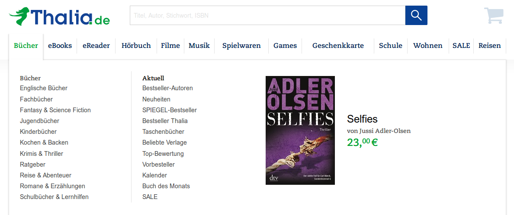
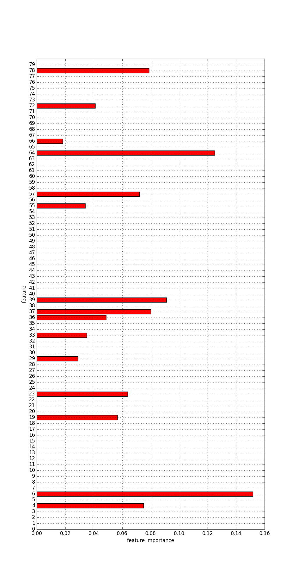

Werkstattbericht:
Roman-Typen als Topic-Modell-Klassen?
Ulrike Henny-Krahmer
(CLiGS, Würzburg)
Kolloquium "Digital Humanities – Aktuelle Forschungsthemen"
Köln, 6. Juli 2017
Folien: https://hennyu.github.io/dh_coll_17


Überblick
- Kontext & Fragestellung
- Hintergrund: Literarische Gattungen, DH-Methoden
- Korpus
- Analyse: Topic Modeling, Klassifikation & Clustering
- Fazit
1. Kontext & Fragestellung
CLiGS
- Nachwuchsgruppe "Computergestützte Literarische Gattungsstilistik", http://cligs.hypotheses.org
- disziplinäre Verortung: zwischen Literaturwissenschaften, Computerlinguistik und Informatik
- Gegenstand: spanischsprachige und französische Literatur, 17./18. und 19. bis frühes 20. Jahrhundert
CLiGS, Ziele
- einzelne literarische Gattungen beschreiben
- das Konzept "Gattung" neu denken
Fragestellung
Roman-Typen als Topic-Modell-Klassen?
- Kann man verschiedene Roman-Typen (oder Roman-Untergattungen) anhand ihrer Themen beschreiben?
- Topic Modeling als Verfahren zum automatischen Ermitteln von Themen
Fragestellung
Roman-Typen als Topic-Modell-Klassen?
- Klassen als ein Konzept der Beschreibung von Roman-Untergattungen
- Sind abgeschlossene, klar begrenzte Klassen ein gutes Konzept zur Beschreibung von Roman-Untergattungen und was wären Alternativen?
2. Hintergrund
- Literarische Gattungen, Roman-Untergattungen
- DH-Methoden
- Topic Modeling
- Klassifikation & Clustering
2.1 Literarische Gattungen, Roman-Untergattungen
Gattungen, Untergattungen
Es gibt sie!
Corpus of English Religious Prose, http://coerp.uni-koeln.de/, Screenshot
Literarische Gattungen, Roman-Untergattungen
Es gibt sie!
Thalia.de, https://www.thalia.de/shop/home/show/, Screenshot
Literarische Gattungen, Roman-Untergattungen
Es gibt sie!
Thalia.de, https://www.thalia.de/shop/romane-erzaehlungen-3/show/, Screenshot
Roman-Untergattungen, Fragen:
- Was sind sie eigentlich?
- Gibt es eine Systematik?
- Kann man Unterschiede an den Texten selbst erkennen?
- Mit welchen Konzepten kann man sie beschreiben?
- Mit welchen Methoden kann man sie untersuchen?
2.2 DH-Methoden
Topic-Modeling
Was ist Topic Modeling?
- Topic Modeling ist eine Methode der quantitativen Textanalyse
- Ziel: Aufdecken "versteckter" semantischer Strukturen
- Hintergrund: Distributionelle Semantik
- J. R. Firth: "You shall know a word by the company it keeps" (1957)
- Wiederkehrende Themen / Motive / Diskurse werden identifiziert
- Wichtig: automatisch & ohne explizites semantisches Wissen!
Wie funktioniert Topic Modeling?
- gegeben: Dokumente & Wörter
- gesucht: versteckte "Topics"
- Statistik:
- Welche Wörter kommen innerhalb von Dokumenten und zwischen Dokumenten gemeinsam vor?
- Ableiten von Topics aus den Wortverteilungen
- Ergebnis: ein Topic-Modell
Topic-Modell: Topics mit Wörtern
David M. Blei (2012): Probabilistic Topic Models. Communications of the ACM, Vol. 55, No. 4, p. 78.Topic-Modell: Topics mit Wörtern (Beispiel)
| 0 | katholisch religion könig katholik kaiser protestantisch handeln niederland provinz protestantismus |
| 6 | erziehung erzieher tugend mensch ideell zögling gesellschaft abhandlung historisch inner |
| 7 | grenze nationalität heutig sprachgrenze südlich süddeutsch gebiet inner muttersprache einheitsstaat |
| 14 | bahn bahnlinie konzession bahnbau projekt geplant annullierung britisch anwenden ausdrücklich |
| 27 | virtuose pianoforte talent vater virtuos knabe welt klavierlehrer portrait instrument |
Tools
| Name | Developer | Language | Link | ||
|---|---|---|---|---|---|
| MALLET | machine learning for language toolkit | Andrew McCallum et al. | Java | http://mallet.cs.umass.edu/topics.php | |
| Gensim | topic modeling for humans | Radim Řehůřek | Python | https://radimrehurek.com/gensim | |
| tmw | topic modeling workflow | Christof Schöch | Python | https://github.com/cligs/tmw | |
| dfr-browser | a simple topic-model browser | Andrew Goldstone | JavaScript | http://agoldst.github.io/dfr-browser/ |
Klassifikation & Clustering
Klassifikation & Clustering
- Verfahren aus dem Bereich Maschinelles Lernen
- zur automatische Ermittlung von Textgruppen
- eine ganze Reihe verschiedener Algorithmen (SVM, Decision Trees, k-means, ...)
Klassifikation
- überwacht
- die Gruppen stehen fest
- Was gehört in welche Gruppe?
Clustering
- unüberwacht
- die Gruppen stehen nicht fest
- Was passt zusammen?
3. Korpus
Korpus
- Hispanoamerikanischer Roman im 19. Jahrhundert
- Roman-Untergattungen: vor allem historische, sentimentale, soziale und kostrumbristische Romane
- Textsammlung: rund 200 Romane aus Mexiko, Argentinien, Kuba
Korpus
Romane über die Jahrzehnte, Vergleich von Korpus und Bibliographie
Korpus
Romane im Korpus über die Jahrzehnte und nach Ländern
Korpus
Anteile von Romanen verschiedener Untergattungen
Korpus
Länge der Romane im Korpus in Tokens
4. Analyse
- Topic Modeling
- Klassifikation
- Clustering
Topic Modeling
Ziel: Ermitteln von Themen, die in den Romanen eine Rolle spielen
Topic Modeling
- Vorverarbeitung: Lemmatisierung, Segmentierung
- Tool: Mallet
- Anzahl Topics: 80
- Auswertung mit TMW und eigenen Skripten
Topic Modeling, Ergebnisse
Anteile der Topics in der Textsammlung
(links absteigend,
rechts aufsteigend nach Wichtigkeit)

(eigene Darstellung, mit pygal)
Topic Modeling, Ergebnisse
Beispiel-Topic 34: palabra-asunto-posible (Wort-Angelegenheit-möglich)
(erstellt mit TMW)
Topic Modeling, Ergebnisse
Beispiel-Topic 39: corazón-lágrima-alma (Herz-Träne-Seele)
(erstellt mit TMW)
Topic Modeling, Ergebnisse
Beispiel-Topic 43: ejército-enemigo-prisionero (Heer-Feind-Gefangener)

(erstellt mit TMW)
Klassifikation
Ziel: Ermitteln von Themen, die für die Einordnung der Romane in bestimmte Untergattungen zentral sind
Klassifikation
- hier verwendet: Decision Trees
- mit Python und der Bibliothek sklearn
Klassifikation, Entscheidungsbaum
3 Klassen: historical, sentimental, costumbrista
Optimale Baumtiefe: 4 | Genauigkeit: 97,2% im Training, 58,3% im Test
(Darstellung erstellt mit sklearn)
Klassifikation, Merkmale
|
3 Klassen: historical, sentimental, costumbrista für die Entscheidung wichtige Merkmale:
... |
Klassifikation, Entscheidungsbaum
4 Klassen: historical, sentimental, costumbrista, social
Optimale Baumtiefe: 5 | Genauigkeit: 90,1% im Training, 41,9% im Test
(Darstellung erstellt mit sklearn)
Klassifikation, Merkmale
|  |
4 Klassen: historical, sentimental, costumbrista, social für die Entscheidung wichtige Merkmale:
... |
Klassifikation, Entscheidungsbaum
2 Klassen: historical, sentimental
Optimale Baumtiefe: 1 | Genauigkeit: 83,3% im Training, 83,3% im Test
(Darstellung erstellt mit sklearn)
Klassifikation, Merkmale
|
2 Klassen: historical, sentimental für die Entscheidung wichtiges Merkmal:
|
Klassifikation
- mehr verschiedene Untergattungen machen die Entscheidung schwieriger
- besonders gut klappt es bei historischen vs. sentimentalen Romanen
- schon mit wenigen, charakteristischen Topics aus dem Topic-Modell können verschiedene Arten von Romanen relativ gut unterschieden werden; es sind nicht alle Topics nötig
Clustering
Ziel: Überprüfen, ob Romane sich auf der Grundlage
(zunächst aller)
ihrer Themen nach den Untergattungen gruppieren
(ohne dass die
Untergattungen vorher festgelegt sind)
Clustering
- hier verwendet: k-means
- mit Python und der Bibliothek sklearn
Clustering
3 Cluster | 95 Romane
3 Untergattungen: historical (39),
sentimental (33), costumbrista (23)
(eigene Darstellung, mit pygal)
Clustering
5 Cluster | 95 Romane
3 Untergattungen: historical (39),
sentimental (33), costumbrista (23)
(eigene Darstellung, mit pygal)
Clustering
7 Cluster | 95 Romane
3 Untergattungen: historical (39),
sentimental (33), costumbrista (23)
(eigene Darstellung, mit pygal)
Clustering
- wird die Clusterzahl entsprechend der Zahl der (angenommenen) Untergattungen gewählt, passen die sich ergebenden Gruppen nicht zu den Untergattungen
- Annahme: weitere Differenzierung könnte helfen → Erhöhung der Clusterzahl
- aber: auch bei mehr Clustern als (angenommenen) Untergattungen ergeben sich kaum "saubere" Gruppen (in denen nur Romane eines Typs vorkommen)
- auffällig: immer ein besonders großer Cluster (von mainstream-Romanen?)
Fazit
Fazit I
- Mit Hilfe von Topic-Modeling lassen sich verschiedene Roman-Typen beschreiben
- Geht man von bekannten Roman-Untergattungen aus...
- lassen sich manche von ihnen gut als Topic-Modell-Klassen abbilden, z.B. historische Romane vs. sentimentale Romane
- ist dies bei anderen Untergattungen viel schwieriger, z.B. bei kostumbristischen Romane und Gesellschaftsromanen
Fazit II
- (offene) Topic-Cluster statt (geschlossenen) Klassen: Zuordnung zu bekannten Untergattungen immer noch schwierig
- näher zu untersuchen:
- möglicherweise ist das Gewicht einzelner, charakteristischer Topics aussagekräftiger als die Verteilung aller Topics aus dem Topic-Modell in den Romanen
- was passiert, wenn man andere Text-Merkmale (über Topics hinaus oder statt Topics) hinzunimmmt
Fazit III
- Für (die hispanoamerikanischen) Roman-Untergattungen könnte das
bedeuten, dass...
- die Zuordnung einzelner Romane zu Untergattungen überprüft werden muss
- weitere Gattungsmodelle in Betracht gezogen
werden müssen
- prototypische vs. randständige Vertreter?
- Frage nach Mischgattungen (insb. hist. + sent.)
- zumindest bestimmte Untergattungen für die Texte eine geringere Rolle spielen als andere
- es zwar Text-Typen gibt, die näher untersucht werden können, diese aber nicht unbedingt mit Untergattungen gleichzusetzen sind
Literaturhinweise
- Blei, David M. (2012): "Probabilistic Topic Models." In: Communications of the ACM 55.4. doi:10.1145/2133806.2133826.
- Goldstone, Andrew (2013-2015): "DFR-browser". http://agoldst.github.io/dfr-browser/
- Hempfer, Klaus W. (2010): "Zum begrifflichen Status der Gattungsbegriffe: Von 'Klassen' zu 'Familienähnlichkeiten' und 'Prototypen'". In: Zeitschrift für französische Sprache und Literatur 120, 14-32.
- McCallum, Andrew Kachites (2002): "MALLET: A Machine Learning for Language Toolkit." http://mallet.cs.umass.edu/
- Pedregosa et al. (2011): "Scikit-learn: Machine Learning in Python". In: Journal of Machine Learning Research 12, 2825-2830. http://jmlr.csail.mit.edu/papers/v12/pedregosa11a.html
- Řehůřek, Radim und Sojka, Petr (2012): "Software Framework for Topic Modelling with Large Corpora". In: Proceedings of the LREC 2010 Workshop on New Challenges for NLP Frameworks, 45-50. http://is.muni.cz/publication/884893/en
- Schöch, Christof (2015): "Topic Modeling Workflow in Python" (tmw). Version 0.2.0. Würzburg: CLiGS. https://github.com/cligs/tmw
Vielen Dank!
Folien: https://hennyu.github.io/dh_coll_17
CLiGS-Gruppe: http://cligs.hypotheses.de/